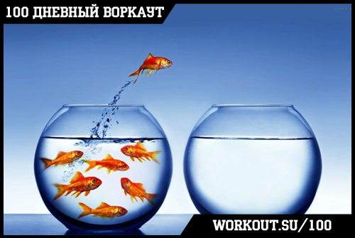
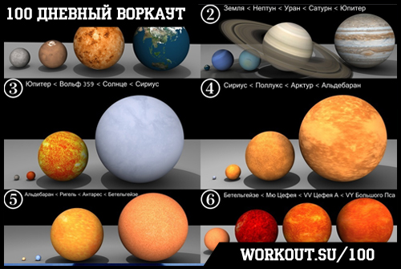

100 Дневный воркаут
<==== Вернуться к оглавлению
День 42. Чувство уверенности в своих силах
!!! ЗАВТРА ДОБАВЛЯЕМ КРУГ !!!
Не буду тянуть кота за хвост, потому что сегодня действительно крутая тема ждет вас в рамках инфо-поста, поэтому просто напомню, что по традиции последний день тренировочной программы мы посвящаем
развитию гибкости и растяжке
.
Как говорил
Генри Форд
(кстати, очень рекомендую прочитать его биографию):
"Если вы думаете что способны сделать что-то или если думаете, что не способны, то вы правы в обоих случаях".

Можете мне верить, можете нет, но каждый раз, когда вы говорите или думаете, что у вас что-то никогда не получится, или что-то для вас трудно, или вы к чему-то не готовы, то подобные мысли делают вас слабее.
И я сейчас не говорю о какой-нибудь таинственной концепции, вроде того, что нужно мыслить позитивно, и тогда вселенная развернется тебе навстречу. Вселенной, по большому счету, до лампочки каждый из нас. И если у кого-то есть сомнения на этот счёт, то рекомендую взглянуть на следующую картинку:

Серьёзно. Я думаю, что вселенной абсолютно всё равно, будете ли вы мыслить позитивно или негативно. Но как я уже говорил раньше, подобные мысли могут вас делать слабее или сильнее. И это реальный факт и он напрямую связан с такой штукой, которая называется "самореализующиеся пророчества". Если заинтересовались, то рекомендую прочитать в википедии об этом явлении (а так же об эффекте Розенталя). Но теперь вернёмся ближе к нашей действительности.
Наше поведение во многом определяется тем, как мы сами себя воспринимаем (а на эту оценку не последним образом влияет мнение окружающих). Если мы живём в "здоровой" (в данном случае имеется в виду скорее прилагательное "хорошей", близкое по значению английскому "healthy") среде, где нас любят, ценят и поддерживают, то мы будем куда более уверены в себе и своих силах, чем если окружающая нас среда проявляет враждебность. При этом в гораздо большей степени на нас влияет не то, как среда себя проявляет на самом деле, а то, как мы воспринимаем её проявления. От безобидной шутки коллеги по работе один человек может впасть в депрессию, посчитав, что его вообще не ценят и издеваются, а это в свою очередь скажется на его работоспособности, он может стать более раздражительным, поссориться с другими коллегами и т.д. В результате может возникнуть цепная реакция, которая приведёт к тому, что он решит сменить работу. В тоже время, другой человек в аналогичной ситуации, но более уверенный в себе, может спокойно пропустить шутку и жить дальше долго и счастливо. Одна и та же ситуация приводит к диаметрально противоположным последствиям только в зависимости от того, как мы её воспринимаем и как мы себя ведём.
Это одна сторона медали. Давайте посмотрим на другую. Очень многие молодые парни стесняются общаться с красивыми девушками, ну там подойти и заговорить на улице просто. Не будем вдаваться в причины этого, но если они для себя уже (!) решили, что это они недостойны этой девушки, то и вести дальше они будут себя соответствующим образом. Вы когда-нибудь в жизни бывали в ситуациях, когда вы чувствуете себя неловко, потому что по какой-то причине считали, что не соответствуете окружающей среде? Ну а далее, для того, чтобы соответствовать своему представлению, вы подсознательно и вели себя аналогичным образом.
Наш мозг чрезвычайно интересная штука. И поэтому он работает подобным образом не только для ситуаций в минус, но и для ситуаций в плюс. Я бы мог сейчас привести в пример пару моментов из разных произведений, в которых главные герои, будучи уверенными в своём успехе действительно его достигали (навскидку, Рон Уизли и псевдо-"зелье удачи" в фильме
"Гарри Поттер и Принц Полукровка"
). Но я думаю что точно так же, каждый из вас сможет вспомнить моменты в жизни, когда внутри было это непонятно откуда взявшееся чувство, что всё получится. И ведь действительно получалось, верно?
Это палка о двух концах. Наши мысли влияют на наши действия. Но точно так же и наши действия влияют на наши мысли. Если у вас день не задался с самого начала, не повод унывать, наоборот, улыбнитесь и взгляните на него по-новому. Более чем уверен, что дела пойдут на лад. Просто попробуйте. Да и вообще больше улыбайтесь по жизни, это очень полезно)
Довольно часто я получаю сообщения от ребят, которые пишут, что пока не в форме и стесняются приходить на площадку, поэтому хотят сначала потренироваться дома. К сожалению, мало кто из них в итоге приходит на открытые тренировки... В связи с этим я хотел бы рассказать свою историю.
Я отлично помню себя, и помню, как я начинал свой путь в воркауте. Так получилось, что у меня одного на тот момент не было спортивной практики за плечами. В то время, как другие ребята занимались паркуром и тренировались, я занимался киберспортом и коллекционными карточными играми (впрочем, стоит заметить, довольно успешно). Поэтому мне пришлось начинать практически с нуля. Я говорю о том, что тогда я мало подтягивался, брусья вообще не делал и т.д. Но в отличии от многих, я не стеснялся выходить на площадку и тренироваться со всеми. Потому что смысл общих тренировок не в том, кто круче или кто может больше элементов. Смысл в том, чтобы вести здоровый образ жизни, тренироваться вместе с единомышленниками, обмениваться опытом и получать удовольствие от самого процесса тренировок! Да и стоит ли говорить, что совместные тренировки гораздо более эффективны, чем тренировки в одиночку?
Первый шаг - всегда самый трудный, потому что ты начинаешь новый путь, ступаешь на дорогу, по которой раньше не ходил и не знаешь, что ждёт тебя впереди. Но поверьте мне, путешествие стоит того, чтобы сделать этот шаг!
======> День 43. Последняя неделя БАЗОВОГО блока